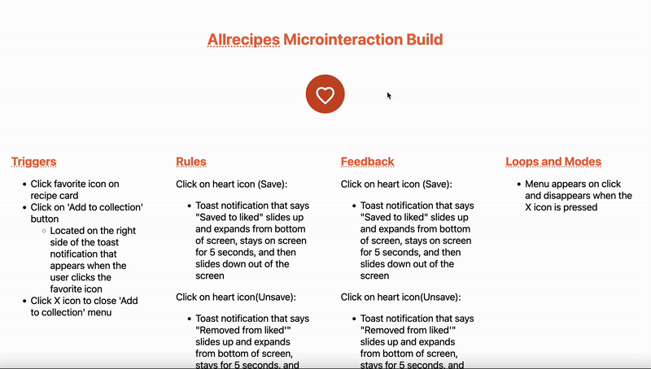
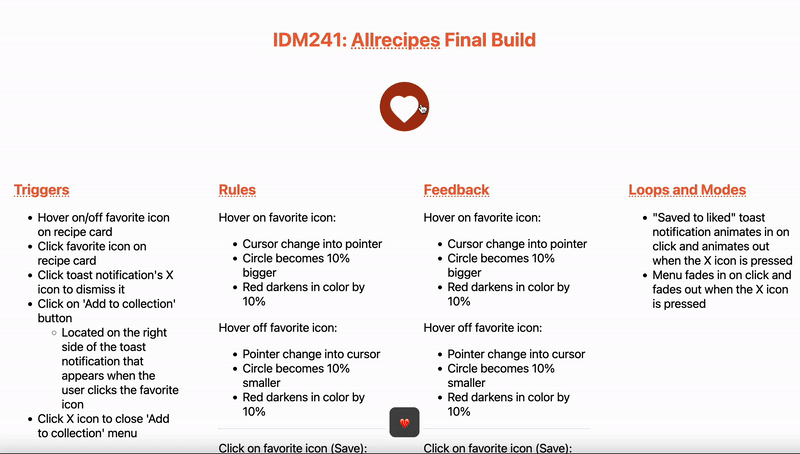

Overview
In my microinteractions class, I had 10 weeks to redesign Allrecipes "Add to Favorites" microinteraction to include clear, intuitive, and meaningful feedback. Prior to the redesign, Allrecipe's microinteraction didn't have a hover state, included a full screen modal for a confirmation status, and had poor ease of access. To solve these problems, I created a subtle, seamless hover state, a temporary toast notification that doesn't interupt the user's workflow, and a button on the toast notification that allows the user to add a favorite to a collection.
Background
Micro-interactions are small, subtle animations that provide the user visual feedback that they have either successfully or unsuccessfully made a change. Micro interactions play a huge role in a user’s experience because they alleviate their cognitive load and add fun personality to the user experience, making the product more memorable and enjoyable to use.
Within a ten week period, I used HTML, CSS, and Javascript to transform Allrecipes’s favorite recipe microinteraction into one that is delightful and easy to use.
Problem
Allrecipes needs an "Add to Favorites" microinteraction that provides clear, intuitive, and meaningful feedback.
ↆ Allrecipe's current microinteraction

- No hover state on buttons: A hover state for a button is essential because it's a clear indication that the button is clickable. The buttons have cursor changes, but no other visual feedback.
- Full screen modal: Full screen modals disrupt the user's workflow and force the attention to the modal. They should only be used if you want the user to undertake an action.
- Poor ease of access: After saving a recipe, if the user wants to move said recipe to a collection, they have to go through two extra loading screens: one for the saved items and one for the collections page.
Objectives
- Include 5 triggers: Design a complex and meaningful microinteraction with at least 5 triggers
- Provide Feedback: Provide immediate and clear feedback to the users
- Meaningful Animations: Create animations on every trigger- there shouldn't be anything that just appears
Process
After defining the background, challenge, and objectives for success, I was able to proceed with the design process of the microinteraction. I designed Allrecipe's new favorite microinteraction in three phases: Alpha, Beta, and Final.
Designing in three phases allowed me to iterate, get feedback, and build upon my last version. This ensured that there weren't any major problems by the time I coded and refined the final, making the process more efficient and thorough.
Phase 1: Alpha Build
My first task in redesigning the microinteraction was adding a hover state to the favorite icon. As mentioned in the problem section of this case study, the existing favorite icon did not include a hover state, which made it unclear if it was clickable or not.

Before designing the interaction, I researched UX best practices for hover states and found that hover states should be a subtle difference that are usually a shade darker than the default state. Applying this guideline, I created a hover state that made the color 10% darker and 10% bigger in size. These subtle tweaks are enough to indicate a change in the interface, but not too overbearing and in your face.
I also redesigned the click trigger during this phase. While the original microinteraction just had an instant fill change, I enhanced the animation and made it more enjoyable by adding a smooth scale up and scale down effect.
Phase 2: Beta Build
In the next build, I focused on designing and coding the toast notification that would animate in when the favorite button is clicked.
For the beta build, when the favorite icon is clicked to save an item, a check mark comes up from the bottom of the screen and expands to show the text: "Saved from liked". This notification dissapears on its own after 5 seconds. The saved toast notification has a button that allows the user to view a modal that lists their collections. The same thing occurs when the user removed the like, expect the text reads "removed", there is an X icon in the place of the checkmark and there isn't a button.
Feedback: In my review session of the beta build, I received a couple pieces of feedback.
1. Because the "saved to liked" toast notificaiton has an interactive element, my users told me that the notification went away too fast. To solve this, I slowed down the animation and made the saved to liked toast notification go away on its own after 60 seconds. This way, the user has ample time to interact with the notificaiton without being forced to manually close it.
2. My user was confused about the iconography on the notification. They thought that the X icon was actually an X icon to close the notificaiton, when in fact, it was merely for decoration/to provide a visual signal of whether the user favorited or unfavorited a recipe.
Phase 3/The Solution: Final Build
I took all the pain points from the beta build's feedback and implemented it into the final. One of the subtle changes I made were adding hover effects to all buttons - not just the favorite icon.
As stated in the section above, another change that I made is the amount of time the "saved to like". The time went from staying for 5 seconds to 60 seconds so that users could process and select whichever flow they desire to.
In addition, I added a X icon to both toast notifications so that users could close out of it any time.
Lastly, I changed the check and X icon to a heart and broken heart to enhance clarity.
Conclusion & Results
In conclusion, I succesfully met my goals by creating 5 new triggers in my microinteraction that convey meaningful and immediate feedback.
I really enjoyed the process of splitting the project builds into 3 phases. Throughout the project, I learned how to build incrementally and get feedback, rinsing, and repeating. This set me up to delve deeper into using agile framework, which is a very popular design framework.
In the beginning I struggled a bit with combining HTML, CSS, and Javascript, but at the end of the day, I'm extemely grateful for the intersectionality of this project because I got to enhance all three of my skills.